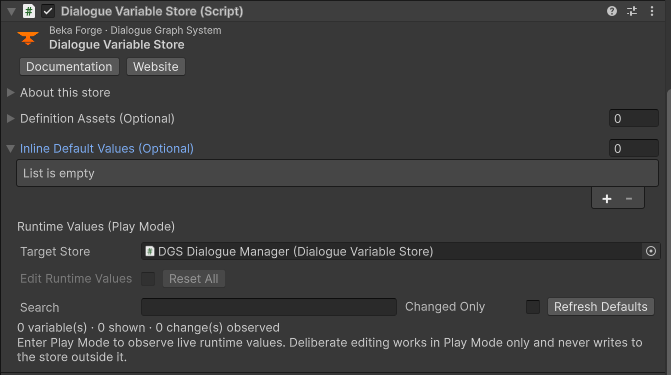
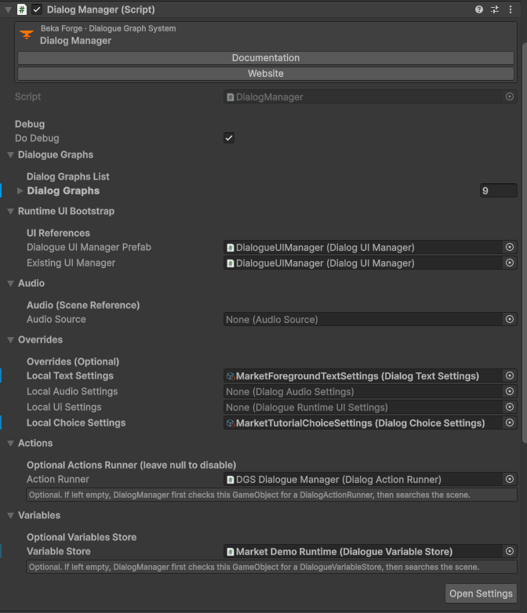

Inspector Reference
Find the right Inspector for graph assets, dialogue settings, localization, camera, and interaction setup. Use each preview to recognize its fields; make project changes in Unity.
For node fields and graph ports, use the Node Reference. These browser demonstrations use example values, do not persist changes, and do not prove runtime behavior.
Index
Graph and speaker data
Dialog Graph
Inspect graph-level category and owned node/link data; nodes and connections are authored in the graph workspace.
- In the Project window, right-click a folder under Assets and choose Create > Beka Forge > Dialogue Graph System > Graphs > Dialogue Graph, or select the DialogGraph asset you already use.
- Open the graph asset in Unity and inspect its graph metadata; make structural edits in the graph canvas.
Expected result: Graph asset references nodes and links for a single authored conversation.
In this browser example: Edit the Primary Category text field or a Categories entry and observe that field value update; this preview has no category selector and does not load a graph. Changes remain in this example only.
Dialog Character
Configure display name, descriptive context, speech style, traits, portrait, and voice profile for reusable speaker identity.
- In the Project window, create a character with Create > Beka Forge > Dialogue Graph System > Characters > Character, or select the existing Dialog Character asset.
- Create/select a Dialog Character asset, set its presentation fields, then assign it to a Dialog node’s Character reference.
Expected result: Dialog lines can resolve consistent speaker presentation from the assigned asset.
In this browser example: Edit the Display Name text field and observe its value there; this example does not render a separate speaker label. Changes remain in this example only.
Variable Definition
Define a stable variable ID, readable name, value type, and default value used by conditions and mutations.
- In the Project window, create a variable with Create > Beka Forge > Dialogue Graph System > Variables > Variable, or select the existing Dialog Variable asset.
- Create/select a Dialog Variable asset; choose Boolean, Integer, Float, or String and set its default.
Expected result: Nodes can reference the same typed dialogue variable.
In this browser example: Choose a Type, click Apply Type, then observe the Default value control change to the applied type. Preview Type alone does not apply it. Changes remain in this example only.
Dialogue Node Inspector
DialogNode has two authoring surfaces. Its Graphs card edits Node Title, Speaker, Dialog, and related presentation fields; the native Unity Inspector exposes Node Name, Identity (read-only GUID with Copy/Regenerate), Speaker (Name, Portrait), Content (Line Text, Dialog Audio), and Timing (Wait for Audio, Sync Text with Audio, Display Time).
- Open the graph in the DGS editor; select a Dialog node card for graph fields, or select its DialogNode sub-asset in the Project window for the native Inspector.
- To edit the graph card, open Graphs and select a Dialog node. To use the native Inspector, select that graph’s DialogNode sub-asset in the Project window, then edit its Node Name, Speaker, Content, or Timing foldout.
Expected result: The selected card or DialogNode sub-asset shows its own edited values in the relevant authoring surface.
In this browser example: Edit the example Line Text field and observe the text change in that field. This Inspector example does not render a separate dialogue card; changes remain in this example only.
Dialogue runtime settings
Dialogue Variable Store
Inspect the runtime variable-store component and its configured definition/state references.
- In the scene Hierarchy, select the GameObject that has the Dialogue Variable Store component.
- Select the Dialogue Variable Store component on the scene object and check its variable assets and setup.
Expected result: Runtime dialogue has a store for declared variables.

In this browser example: Review the example variable rows and see which values belong to the store. Changes remain in this example only.
Dialog Text Settings
Set text display defaults such as reveal behavior, speed, and related text options.
- In the Project window, select the Dialog Text Settings asset used by your DialogManager; its Create menu path is Create > Beka Forge > Dialogue Graph System > Settings > Text Settings.
- Open the text settings asset and change one text presentation value, then save the asset.
Expected result: Dialogue UI receives the configured text defaults.
In this browser example: Change a text setting such as reveal speed and observe its sample value update. Changes remain in this example only.
Dialog Choice Settings
Set choice presentation and input behavior defaults for answer buttons.
- In the Project window, select the Dialog Choice Settings asset used by your DialogManager; its Create menu path is Create > Beka Forge > Dialogue Graph System > Settings > Choice Settings.
- Open the choice settings asset, review its interaction/display fields, then save.
Expected result: Choice UI uses the selected defaults.
In this browser example: Toggle an example choice behavior and observe its displayed setting. Changes remain in this example only.
Dialog Audio Settings
Configure dialogue audio behavior and referenced playback settings.
- In the Project window, select the Dialog Audio Settings asset used by your DialogManager; its Create menu path is Create > Beka Forge > Dialogue Graph System > Settings > Audio Settings.
- Open the audio settings asset, check assigned audio references and playback options, then save.
Expected result: The runtime can read the configured audio settings.
In this browser example: Change a volume or audio option and observe the example setting update; no audio plays. Changes remain in this example only.
Dialog Input Settings
Configure continue, skip, and related dialogue input choices.
- In the Project window, select the Dialog Input Settings asset assigned to the dialogue setup; inspect the asset itself rather than a scene component.
- Open the input settings asset, review enabled controls and key choices, then save.
Expected result: Dialogue input defaults match your intended controls.
In this browser example: Change an input option and observe the selected control value. Changes remain in this example only.
Dialog Voice Table
Map stable voice identifiers to voice clips or entries used for authored lines.
- In the Project window, create or select a voice table with Create > Beka Forge > Dialogue Graph System > Characters > Voice Table.
- Open the voice table asset, add or edit one voice entry, and save.
Expected result: A line can resolve the intended voice entry by its identifier.
In this browser example: Select or edit a voice entry and observe its identifier and clip fields. Changes remain in this example only.
Dialog Delivery Preset
Group delivery and presentation values that can be reused by dialogue lines.
- In the Project window, create or select a delivery preset with Create > Beka Forge > Dialogue Graph System > Graphs > Delivery Preset.
- Open the delivery preset, review delivery timing and audio/text options, then save.
Expected result: Authored delivery defaults can be reused consistently.
In this browser example: Change a delivery value and observe the preset field update. Changes remain in this example only.
Dialog Graph Category Catalog
Organize graphs with category paths used by editor browsing.
- In the Project window, select the Dialog Graph Category Catalog asset configured for your project.
- Open the category catalog, add or edit a slash-delimited category path, then save.
Expected result: Graph categories can be selected consistently in the editor.
In this browser example: Edit a slash-delimited category path and observe the catalog row update. Changes remain in this example only.
Dialog Manager
The custom Inspector groups Do Debug; Dialogue Graphs rows (Dialog ID + Dialog Graph); Runtime UI Bootstrap (Dialogue UI Manager Prefab, Existing UI Manager); Audio Source; Overrides (Local Text Settings, Local Audio Settings, Local UI Settings, Local Choice Settings); Actions (Action Runner); and Variables (Variable Store). Open Settings opens the related settings workspace. Validation warns only when both UI-manager references are unset and for graph-registry issues; it does not validate every reference.
- In the Hierarchy, select the scene GameObject that has the DialogManager component.
- Select Dialog Manager on a scene object. In Dialogue Graphs, assign a graph to a row and give it a unique Dialog ID; assign either Dialogue UI Manager Prefab or Existing UI Manager. Use Open Settings to reach related defaults.
Expected result: The graph row has a graph and a unique Dialog ID. The Inspector reports missing UI bootstrap assignment and registry issues within those documented checks.

In this browser example: Change a Dialog ID mapping and observe the paired graph reference remain a separate field. Changes remain in this example only.
Localization
Dialog Localization Table
Store locale entries and source-line translations, including source revisions.
- In the Project window, create or select a table with Create > Beka Forge > Dialogue Graph System > Localization > Table.
- Open the localization table; verify source and locale codes before editing localized strings.
Expected result: The table contains locale-specific text keyed to source dialogue lines.
In this browser example: Edit a locale string and observe only that example translation change. Changes remain in this example only.
Localization Runtime Settings
Choose default locale, locale display names, and whether to remember player choice.
- In the Project window, create or select runtime settings with Create > Beka Forge > Dialogue Graph System > Localization > Runtime Settings.
- In Localization Runtime Settings, set Default Locale Code and populate Localization Tables with the table assets available to the runtime; optionally set locale display names and Remember Player Choice, then save.
Expected result: The runtime has a declared locale list and fallback locale.
In this browser example: Change Default Locale Code and observe the selected fallback value. Changes remain in this example only.
Dialog Welcome Branding
Configure the editor welcome window’s product labels, URLs, buttons, and repeat mode.
- In the Project window, select the Dialog Welcome Branding asset used by the editor welcome panel.
- Open welcome branding settings; update labels and support/documentation links, then save.
Expected result: The editor welcome panel uses those branding settings.
In this browser example: Edit Product Name or a button-label field and observe that field value update; this Inspector example does not render a separate welcome header. Changes remain in this example only.
Editor settings
Dialogue Runtime UI Settings
Control which dialogue panels, labels, and controls are visible in runtime UI.
- In the Project window, create or select settings with Create > Beka Forge > Dialogue Graph System > Settings > Runtime UI Settings.
- Open runtime UI settings; toggle one relevant surface such as speaker name, portrait, choices, history, or settings.
Expected result: The runtime UI visibility configuration reflects your choices.
In this browser example: Toggle Show Portrait or Show Choice Panel and observe the selected visibility state. Changes remain in this example only.
Dialog Environment
Record atmosphere, tone, and descriptive context for a scene or generation context.
- In the Project window, create or select an environment with Create > Beka Forge > Dialogue Graph System > Conditions > Environment.
- Open a Dialog Environment asset and edit its descriptive context, then save.
Expected result: The environment asset contains reusable scene context.
In this browser example: Edit Atmosphere or Default Tone and observe the edited value in that field; the example has no separate generated environment description. Changes remain in this example only.
Dialog Scene Context
Link an environment to a scene goal, tone, and extra rules for contextual authoring.
- In the Project window, create or select scene context with Create > Beka Forge > Dialogue Graph System > Conditions > Scene Context.
- Open a Dialog Scene Context asset, assign its environment and add scene-specific context.
Expected result: The scene context references the intended environment and instructions.
In this browser example: Edit Scene Goal and observe its text in that field; the example does not render a separate contextual instruction. Changes remain in this example only.
Scene components
Camera Controller Manager
Assign the Output Camera (or leave it empty to fall back to Camera.main) and inspect read-only live operation state. Rig and target IDs are registered on BekaCameraRig and BekaCameraTarget components.
- In the Hierarchy, select the scene GameObject that has the Camera Controller Manager component.
- Select the Camera Controller Manager in the scene and assign its Output Camera if needed; expand Live Operation State to inspect pose/effect status. Set stable IDs on the rig and target components instead.
Expected result: The manager shows its Output Camera assignment or the Camera.main fallback, with read-only live operation status.
In this browser example: Expand Live Operation State and inspect the example Pose/Effect status. This manager demo has no rig or target registry; edit stable IDs in the separate Camera Rig & Target example.
Camera Rig & Target
Assign stable IDs to rig and target components used by camera nodes.
- In the Hierarchy, select the GameObject carrying BekaCameraRig or BekaCameraTarget.
- Select a BekaCameraRig or BekaCameraTarget component and set its Stable Id to match a graph node.
Expected result: A camera node can reference the matching scene ID.
In this browser example: Edit Stable Id and observe the entered identifier in that field; no separate component-identifier preview is rendered. Changes remain in this example only.
Interactable
Configure action/object labels, press or hold mode, availability, prompt, Unity Events/component action, validation, and runtime diagnostics.
- In the Hierarchy, select the target GameObject that has the Interactable component.
- Select an Interactable component, set its prompt labels and action source, then inspect validation results.
Expected result: The object exposes a configured interaction prompt/action path.
In this browser example: Change Interaction Mode or Action Source and observe the selected value in that control; Hold Duration and the example prompt references remain visible/static, and no interaction runs. Changes remain in this example only.
Interactor
Configure interaction references, targeting mode, and obstruction checks; inspect the read-only Input Ownership and Runtime Diagnostics sections, then review Validation.
- In the Hierarchy, select the player GameObject that has the Interactor component.
- Select an Interactor component; set References and Targeting values, then inspect Input Ownership diagnostics and the Validation section.
Expected result: The interactor has a defined target selection policy and scene references.
In this browser example: Switch Targeting Mode between LookAt and Nearest and observe the selected field value; the preview does not query or rank scene targets. Changes remain in this example only.
For practical setup, continue with Creating a Dialog, Integrating Actions, Walla and Sound, and the AI authoring workflow.